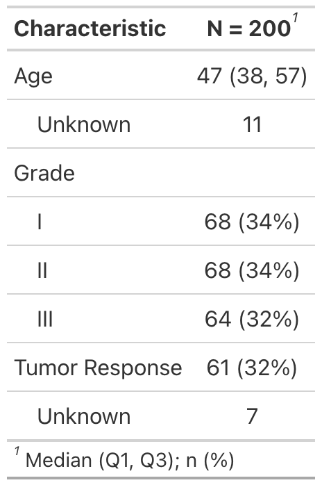
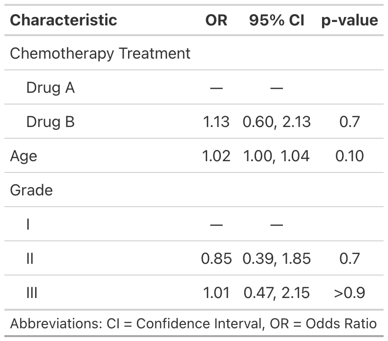

gtsummary 
The {gtsummary} package provides an elegant and flexible way to create publication-ready analytical and summary tables using the R programming language. The {gtsummary} package summarizes data sets, regression models, and more, using sensible defaults with highly customizable capabilities.
Summarize data frames or tibbles easily in R. Perfect for presenting descriptive statistics, comparing group demographics (e.g creating a Table 1 for medical journals), and more. Automatically detects continuous, categorical, and dichotomous variables in your data set, calculates appropriate descriptive statistics, and also includes amount of missingness in each variable.
Summarize regression models in R and include reference rows for categorical variables. Common regression models, such as logistic regression and Cox proportional hazards regression, are automatically identified and the tables are pre-filled with appropriate column headers (i.e. Odds Ratio and Hazard Ratio).
Customize gtsummary tables using a growing list of formatting/styling functions. Bold labels, italicize levels, add p-value to summary tables, style the statistics however you choose, merge or stack tables to present results side by side… there are so many possibilities to create the table of your dreams!
Report statistics inline from summary tables and regression summary tables in R markdown. Make your reports completely reproducible!
By leveraging {broom}, {gt}, and {labelled} packages, {gtsummary} creates beautifully formatted, ready-to-share summary and result tables in a single line of R code!
Check out the examples below, review the vignettes for a detailed exploration of the output options, and view the gallery for various customization examples.
Installation
The {gtsummary} package was written as a companion to the {gt} package from RStudio. You can install {gtsummary} with the following code.
install.packages("gtsummary")
Install the development version of {gtsummary} with:
remotes::install_github("ddsjoberg/gtsummary")
Examples
Summary Table
Use tbl_summary() to summarize a data frame.

Example basic table:
library(gtsummary) # make dataset with a few variables to summarize trial2 <- trial %>% dplyr::select(trt, age, grade, response) # summarize the data with our package table1 <- tbl_summary(trial2)

There are many customization options to add information (like comparing groups) and format results (like bold labels) in your table. See the tbl_summary() tutorial for many more options, or below for one example.
table2 <- tbl_summary( trial2, by = trt, # split table by group missing = "no" # don't list missing data separately ) %>% add_n() %>% # add column with total number of non-missing observations add_p() %>% # test if there's difference between groups bold_labels()

Regression Models
Use tbl_regression() to easily and beautifully display regression model results in a table. See the tutorial for customization options.
mod1 <- glm(response ~ trt + age + grade, trial, family = binomial) t1 <- tbl_regression(mod1, exponentiate = TRUE)

Side-by-side Regression Models
You can also present side-by-side regression model results using tbl_merge()
library(survival) # build survival model table t2 <- coxph(Surv(ttdeath, death) ~ trt + grade + age, trial) %>% tbl_regression(exponentiate = TRUE) # merge tables tbl_merge_ex1 <- tbl_merge( tbls = list(t1, t2), tab_spanner = c("**Tumor Response**", "**Time to Death**") )

Review even more output options in the table gallery.
gtsummary + R Markdown
The {gtsummary} package was written to be a companion to the {gt} package from RStudio. But not all output types are supported by the {gt} package. Therefore, we have made it possible to print {gtsummary} tables with various engines.
Review the gtsummary + R Markdown vignette for details.

Contributing
Please note that the {gtsummary} project is released with a Contributor Code of Conduct. By contributing to this project, you agree to abide by its terms. A big thank you to all contributors!
@ablack3, @ahinton-mmc, @davidkane9, @ddsjoberg, @emilyvertosick, @GuiMarthe, @jeanmanguy, @jennybc, @jflynn264, @jwilliman, @karissawhiting, @leejasme, @ltin1214, @margarethannum, @michaelcurry1123, @MyKo101, @oranwutang, @ryzhu75, @sammo3182, @slobaugh, @tormodb, and @zabore